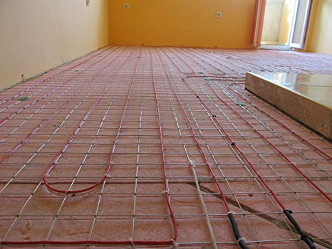
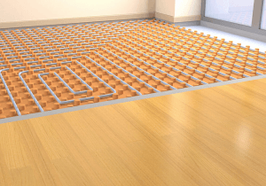
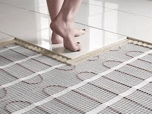

Underfloor Heating System Market to See Modest Growth

The market is likely to attain an advantageous CAGR in the duration of the forecast period.The requirement for maintainable and inexpensive heating systems are motivating the growth of under floor heating solutions.Market reports associated to the construction industry have been put forward by Market Research Future which generates reports on other industry verticals that target the study of recent market scenarios better.
Underfloor heating and cooling is a type of focal heating and cooling which achieves indoor atmosphere control for thermal comfort using conduction, radiation and convection.High occupancy commercial buildings are more likely to see efficiency profits from Underfloor heating because it is most effective for periods of continual occupancy, and because for larger heating needs the costs of an Underfloor heating system become relatively lesser.
Competitive Scenario
The market is set to record a heightened growth pace backed by the positive influence of a number of market forces.The promotional, along with other expenses are now better given the fast-paced market progression.Companies are devotedly preparing for any obstacle that they can face while striving for development in the market.They are opting for effective strategies that can help them outplay their rivals.Some of these strategies being adopted by the companies include partnerships and alliances, which have gained much traction in the market in recent times.
Some of these esteemed companies in the underfloor heating market are Solfex Ltd.(UK), Rayotec Ltd.(UK), Robert Bosch GmbH (Germany), Uponor Corporation (Finland), Honeywell International Inc.(US), Nexans (UK), Incognito Heat Co Ltd.(Scotland), Robot UK Ltd (UK), Danfoss A/S (Denmark), Emersion Electric Co. (US), Uheat (UK), to mention a few.
Underfloor heating Market Segments
For the convenience of the report and enhanced understanding; The Underfloor heating Market is segmented in to 3key dynamics
Segmentation by Type – Electric systems – heating cables, heating mats Hydronic systems- heating pipes, sensors and thermostats, manifolds.
Segmentation by Application – Commercial, Industrial, residential
Segmentation by Regions– Comprises regions – North America, Europe, APAC and Rest of the World.
Underfloor heating Market Regional Analysis
The Europe market for Underfloor heating is one of the biggest market in the world, Underfloor heating market has been gaining momentum over the last few years.Weather condition also play a tremendous role in the growth of the market with the weather conditions of North American countries the demand for underfloor heating market will be prominent and hugely in demand.
The high growth rate of the underfloor heating market in the residential application is mainly due to the growth in the self-build trend and custom-build trend in the domestic sector wherein house owners are involved in the specification of their new homes and are willing to invest more at the initial level to appreciate long-term benefits.
Request a discount on standard prices of this premium report
Industry Updates
[bsa_pro_ad_space id=4]
Share on Facebook Tweet Follow us
Posted On: 2019-10-03T00:00:00
Posted By: Miller Peet





Content Date: 2019-10-03
Download Date: 2021-07-09
Document ID: L0C04EWDL